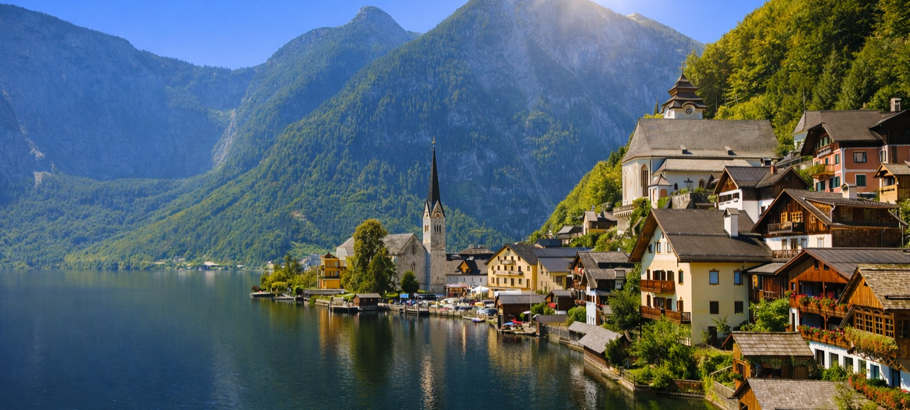

4. Hallstatt (A Világörökség szíve)
47.553085, 13.647849

Hallstatt a Salzkammergut egyik legősibb és legismertebb települése, amely a vaskori Hallstatt-kultúra
névadójaként vált világhírűvé. A környék több mint 7000 éve lakott, elsősorban a hegy gyomrában rejtőző
sólelőhelyek miatt. A település felett működő sóbánya a világ legrégebbi, folyamatosan üzemelő sóbányái közé
tartozik, ahol a régészeti feltárások során kivételesen jó állapotban fennmaradt eszközök, textíliák és fa
szerkezetek kerültek elő. A bányához vezető sikló ma is működik, és a hegytetőről lenyűgöző panoráma nyílik a
tóra és a településre.
Hallstatt óvárosa szinte teljes egészében autómentes, így a tóparti utcákon sétálva különösen erős a
történelmi atmoszféra. A házak a meredek hegyoldalra tapadnak, egymás fölé épülve, szűk sikátorokkal és
lépcsősorokkal összekötve. A klasszikus salzkammerguti faerkélyek, a virágokkal díszített homlokzatok és a
tóra néző teraszok együttese a világ egyik legtöbbet fényképezett alpesi látványát adja. A település
szerkezete a domborzathoz igazodik: a főutca a tóparton fut, míg a felsőbb házsorokhoz meredek gyalogos
lépcsők vezetnek.
A település központi tere a Marktplatz, amely Hallstatt egyik legszebb pontja. A tér közepén álló
Szentháromság-oszlop 1744-ben készült, körülötte pedig színes, festett homlokzatú házak sorakoznak. A tér
kávézói és éttermei ideálisak egy rövid pihenőre, miközben a háttérben a hegyek és a tó látványa keretezi a
hangulatot. Innen indul több hangulatos mellékutca is, amelyek a felsőbb házsorokhoz vagy a tóparti stégekhez
vezetnek.
A település egyik legkülönlegesebb látnivalója a csontház (Beinhaus), amely a Mária mennybemenetele templom
mellett található. A temető szűkös helye miatt a 18–19. században a régi sírokat megnyitották, a csontokat
megtisztították, majd a koponyákat virágmotívumokkal és nevekkel díszítve helyezték el a kápolnában. A több
mint 600 festett koponya egyedülálló kulturális emlék, amely a helyi hagyományok és a térség múltjának
különleges lenyomata.
A Hallstatti-tó látványa meghatározza a település hangulatát. A tó mély, gleccser eredetű medencéje nyugodt
víztükröt ad, amelyben tiszta időben tökéletesen tükröződnek a Dachstein-csoport csúcsai. A tóparti sétányról,
a kis kikötőből és a híres „fotópont” stégről különösen szép kilátás nyílik az óvárosra és a templom karcsú
tornyára. A tóparton végigsétálva több kisebb park, pihenőhely és stég található, amelyek ideálisak rövid
megállókra vagy fotózásra.
A település felső részén található a protestáns templom, amely Hallstatt egyik ikonikus épülete. Karcsú tornya
és tóra néző fekvése miatt gyakran szerepel képeslapokon és útikönyvekben. A templom belső tere egyszerű, de
elegáns, a tóra néző ablakok pedig különleges fényviszonyokat teremtenek. A közelben található a katolikus
templom is, amely a temetővel és a csontházzal együtt alkotja a település történelmi magját.
Hallstatt 1997 óta az UNESCO Világörökség része, mint a „Hallstatt–Dachstein / Salzkammergut kulturális táj”
központi eleme. A település egyszerre őriz ősi bányászati hagyományokat, alpesi építészetet és egyedülálló
természeti környezetet. A tóparti sétány, a Marktplatz, a templomok, a csontház és a hegyoldalba kapaszkodó
házak együttese olyan egységet alkot, amely méltán teszi Hallstattot a világ egyik legszebb és
legkülönlegesebb tóparti falujává.